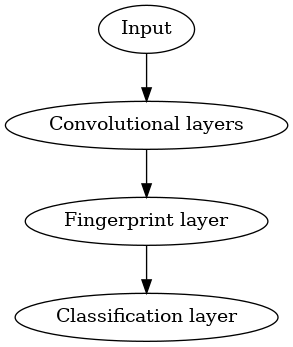
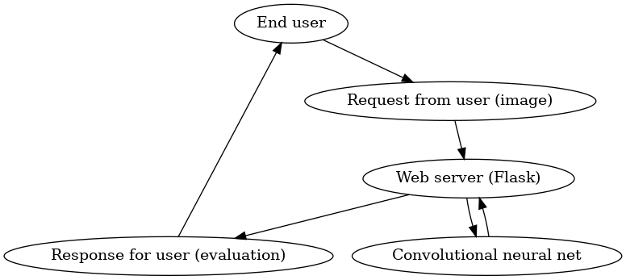
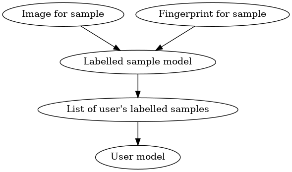

The AI, at its core, uses a convolutional neural network to generate "fingerprints" for each word on a page.
One fingerprint is an array of a fixed, arbitrary number of floating-point numbers (a number we'll call n), which, in theory, represent various significant features of the handwriting.
The mean of these fingerprints is then used as a fingerprint for the entire page.
Here is that algorithm as pseudocode:
// Listing 1
// Where PAGE is an image and WORDS is an array of images:
// (This part is handled by the handwritten-text-recognition-for-apache-mxnet tool, which is incorporated into the project as a git submodule)
WORDS = getAllWords(PAGE)
// Iterate over WORDS to create an array of fingerprints, one for each word:
FINGERPRINTS = WORDS.map(getFingerprint)
PAGE_FINGERPRINT = arithmeticMean(FINGERPRINTS)
// PAGE_FINGERPRINT[k] is the mean of FINGERPRINT[k] for all FINGERPRINTS
// Listing 2
// Where LABELLED_PAGES is an array of samples where the index of a given sample can be used as an ID for its author
// And UNLABELLED_PAGE is a sample we want to classify, assuming it was written by the same author as one of the samples in LABELLED_PAGES
UNLABELLED_PAGE_FINGERPRINT = getPageFingerprint(UNLABELLED_PAGE)
// Find the LABELLED_PAGE whose fingerprint is closest to UNLABELLED_PAGE's in n-dimensional space
BEST_GUESS_ID = 0
BEST_GUESS_DISTANCE = euclideanDistance(getPageFingerprint(LABELLED_PAGES[0]), UNLABELLED_PAGE_FINGERPRINT)
// Start from index 1 since we initialized BEST_GUESS_ID and BEST_GUESS_DISTANCE with values for LABELLED_PAGES[0]
loop COUNTER from 1 to length(LABELLED_PAGES) - 1
LABELLED_PAGE = LABELLED_PAGES[COUNTER]
FINGERPRINT = getPageFingerprint(LABELLED_PAGE)
DISTANCE = euclideanDistance(FINGERPRINT, UNLABELLED_PAGE_FINGERPRINT)
// Check if this one is closer
if DISTANCE < BEST_GUESS_DISTANCE then
// New best
BEST_GUESS_ID = COUNTER
BEST_GUESS_DISTANCE = DISTANCE
end if
end loop
The easiest way to train a neural network of any kind is to feed it data of the format (DATA, LABEL), where DATA is a tensor of a fixed size and LABEL is a bounded discrete variable,
and then teach it to predict LABEL given DATA. To use any training mechanism other than this is to swim upstream.
I wanted to find a way to train my network this way but still have a model, in the end, which can be applied generally to any set of authors.
Therefore, I trained my network on a dataset I found online, which contains
handwriting samples from a closed set of authors, each of which could easily be given a numerical ID.
This network had a structure like so:

Where the classification layer produces an array of probabilities, one for each author, where element k is the probability that the input is a sample by author k.
Once it's been trained, the classification layer can simply be removed, exposing the fingerprint layer.
The fingerprint layer is linearly related to the classification, but can be applied to any other set of authors,
though it will obviously be most accurate when applied to the set it was trained on.
The function of the web app is fairly straightforward. It takes full advantage of the model-view-controller architecture as used
in typical Flask applications. It essentially acts as a relay between the end user and the AI described above.
Here is a diagram showing a simplified view of that process:

An "evaluation" and a "fingerprint" are not the same thing. An evaluation, in this case, is a classification on labelled samples
that the end user has already uploaded.
Recall Listing 2, where we classified an unlabelled sample by comparing it to a set of labelled ones.
However, in that pseudocode we found fingerprints for each image. We don't want to have to do this every time, since querying the neural net is computationally expensive.
Therefore, the fingerprint for each labelled sample that a user uploads is stored alongside it in the database. Here's how that structure looks:

Where each fingerprint is the n-length array of floats returned by the model serialized as JSON and each image is a filepath pointing to the image in the server's file system.
All this means that the fingerprint for each labelled sample only needs to be calculated once.
| What is being tested? | What is the test? | Criteria for passing |
|---|---|---|
| User creation/login/logout functionality | Submit valid and invalid data to the creation, login, and logout forms in the web app. | Passed if the valid data produces no errors and updates the database correctly and the invalid data produces no errors and causes no change to the database. |
| Labelled sample uploads | Upload a labelled sample. | Passed if the file is added to the server's file system in the right place and a database entry is added including the filepath and the fingerprint calculated for the sample. |
| Model accuracy | For a given set of authors, upload a labelled sample for each author. Then request an evaluation for an unlabelled one by one of those authors. | The test is passed if the program correctly identifies the labelled sample by the same author as the unlabelled one as the one closest to it. |
| Sample deletion | Delete a previously uploaded labelled sample. | Passed if the corresponding file and database entry are removed. |
All of these tests except for the "Model accuracy" test are included in the test suite for the author-id-server project.